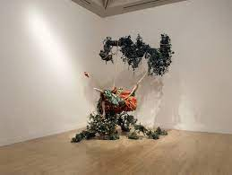

244. The Swing (after Fragonard). Yinka Shonibre. 2001 CE Mixed-media installation
- Interpretation
- The artist was inspired by Fragonard’s The Swing
- This work is a life-sized headless mannequin
- The dress is made of Dutch wax fabric, sold in Africa: it references global trade and postcolonial life in Africa.
- Flowering vines are cast to the floor
- A headless figure: guillotined by the French Revolution
- Context
- Yinka Shonibare was British born, but of Nigerian descent; he lives and works in London
- Two men in the Fragonard painting are not included; the audience takes the place of the men; erotic voyeurism.